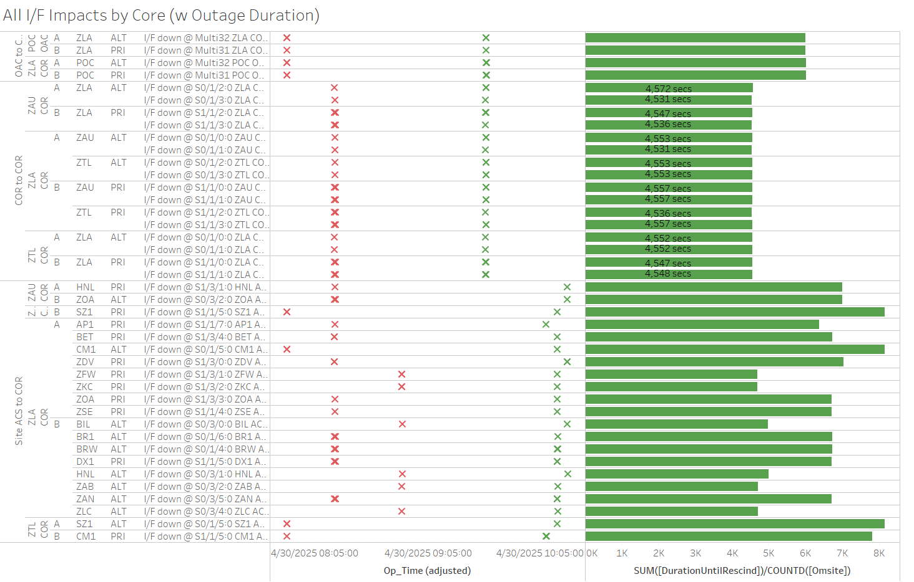

Weekly Highlights 20250423-20250430
4/21-4/25 - ZLA RF Site Survey
- 4/21 23:30 - ZLA WRE-C to Maintenance for RF Site Survey activities...
- 4/25 00:26 - ZLA WRE-C restored to Normal after RF Site Survey complete
4/22-4/29 - ZLA COR-B Router Locking Up
- 4/22 14:08 - OTZ Ring 2 ALT comms down hard; line cleared after ZLA COR-B Reset 4/29 13:40 (~6d 23h)
- 4/26 18:56 - HNL Ring 2 PRI comms down hard; line cleared after ZLA COR-B Reset 4/29 13:40 (~2d 18h)
- 4/29 03:14 - HNL Ring 2 ALT comms down hard; line cleared after ZLA COR-B Reset 4/29 13:40 (~10h 33m)
- 4/29 13:40 - ZLA COR-B Router Reset to clear open
comm issues
- HNL Ring 2 comms restored / OTZ Ring 2 ALT comms cleared
4/23-4/26 L1/L2 Bias Alarms
- 4/23 22:52 - YYR L1/L2 Bias Alarm
- 4/24 18:02 - YYR L1/L2 Bias Alarm (ZDC Only)
- 4/24 20:47 - YYR L1/L2 Bias Alarm (ZTL, ZLA Only)
- 4/24 22:42 - MMD L1/L2 Bias Alarm
- 4/26 01:11 - MPR L1/L2 Alarm
4/28-4/30 - MTP+MPR Comm Cutover Troubleshooting
- 4/28 15:31 - Troubleshooting for MPR / MTP Ring 1 comms...
- 4/29 14:59 - Troubleshooting for MPR / MTP Ring 1 comms...
- 4/30 14:59 - Troubleshooting for MPR / MTP Ring 1 comms...
MPR and MTP still running on Serial comms; not cutover
4/29-4/30 - SZ1 GUS Intrusive Maintenance
- 4/29 07:11 - GUS Switchover - SM9
- DX1 to Primary / SZ1 to Backup for
semi-annual Antenna maintenance-- ref LIR 972858524 - 4/30 15:58 - SZ1 GUS to Maintenance mode for
semi-annual Antenna maintenance-- ref LIR 972858524...
4/30 - ZLA Comm Outage (MR-187415D)
- 4/30 07:53 - POC OAC Ring 1 ALT / Ring 2 PRI comms
to ZLA down hard for
MR-187415D - L3Harris to transition all connections from C15454 to FW9500; all impacted lines cleared by 4/30 10:14 (~8150 seconds max) except ZLA<->ZTL ALT - 4/30 16:30 - Reset ZLA COR-B to try to clear ZLA<->ZTL ALT comms; outstanding lines cleared at 4/30 16:38 (~1709 seconds)

Various Comm Impacts
* Only captures major / long-term comm outages
CM1 Comms
- 4/23 16:10 - CM1 Ring 2 PRI comms flapping; last event cleared at 4/23 20:44 (~1410 seconds total)
- 4/24 16:13 - CM1 Ring 2 PRI comms flapping; last event cleared at 4/24 22:20 (~1892 seconds total)
- 4/25 16:18 - CM1 Ring 2 PRI comms flapping; last event cleared at 4/25 23:11 (~1060 seconds total)
- 4/28 15:15 - CM1 Ring 2 PRI comms flapping; last event cleared at 4/28 22:19 (~1797 seconds total)
- 4/30 15:37 - CM1 Ring 2 PRI comms flapping...
YYR / YFB Comms
- 4/23 07:08 - YYR Ring 2 comms down hard; line cleared at 4/23 14:48 (~27635 seconds)
- 4/23 19:24 - YYR Ring 1 + YFB Ring 1 comms flapping then down hard at 4/23 19:31; both lines came back up to flapping at 4/23 23:11 (~13228 seconds); last events cleared at 4/23 23:14 (~13636 seconds total)
- 4/24 15:27 - YYR Ring 1 + YFB Ring 1 comms flapping then down hard at 4/24 15:33; both lines came back up at 4/24 22:05 (~23577 seconds)
OTZ Comms
- 4/24 07:10 - OTZ Ring 1 PRI comms down hard; line cleared at 4/24 09:19 (~7757 seconds)
Other Sites
- 4/28 09:16 - ZNY Ring 1 ALT / Ring2 PRI comms down hard then flapping; last event cleared at 4/28 11:13 (~4209 seconds total)
- 4/30 06:19 - MTP Ring 1 comms down hard; line cleared at 4/30 10:09 (~3h 49m)
Mexico Ring 2 Down Hard...
- Targeting network upgrade in CY26
OTZ Ring 2 PRI / ALT
- 9/18/24 23:57 - OTZ Ring 1
ALT comms connected
after circuit validation
- Currently the wrong circuit (*508) is being used for OTZ Ring 2 PRI and *509 is connected on OTZ Ring 2 ALT
- Targeting week
of 4/28 to
troubleshoot
onsite at
ZLA and OTZ
- FTI support available at OTZ 4/29 18:00 UTC
List of current offline WREs
List of current offline WREs -- ref WAAS Status Monitor
All Depot shipments to Mexico are halted until the customs process can be finalized
- MMD WRE-A - 3/31/25-... - Freq Std failed -- ref LIR 953873324
- MTP WRE-B - 11/18/24-... - Receiver inits failing -- ref LIR 898330924
- MMX WRE-A - 10/13/24-... - Freq Std failed -- ref LAD 879853824
- MMX WRE-C - 5/15/24-... - Processor failed and could not be restored -- ref LIR 798352224
- MPR WRE-B - 5/3/24-... - Inits failing -- looks like a bad freq std; due to shipping issues, there is no spare Freq Std and no ETA to recover WRE-B... -- ref LIR 44170821
5/11/23-... - MX Ring 2 Satcom Upgrade
- 5/11/23 17:01 - MX Ring 2 SatCom upgrade begins; MX Ring 2 OFFLINE until upgrade troubleshooting is complete
All sites are currently connected through Tijuana with new cables; but still large UDP data packets (WAAS Multicast) being dropped on Ring 2 -- no further actions to take at Tijuana
- All MX Ring 2 currently down with no ETA...
-
WAAS Second Level assessing situation before further troubleshooting...

Major Events


Core I/F Status

Comm Events

Mexico Comm Status